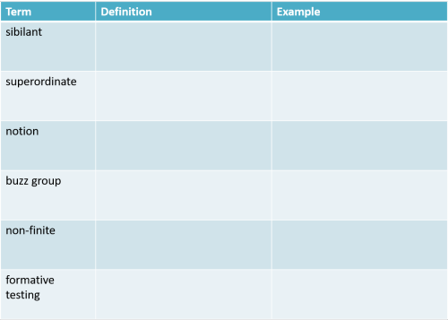

Nearly all the materials and guides on this site will be useful in
preparing you for the demands of the Delta examination. In
particular, those that deal with language analysis rather than
methodology will be of the most help.
What follows is a brief overview with some examples of what to expect
and what to do.
A little more advice from the examiners is set out in
the guide to what to avoid in Module One.
Paper one carries half the 200 marks available to you. The
apportioning is not equal, however:
That means that Task 5 is worth half the total marks awarded, for example,
and Task 1 only 6% of the total.
Given that you are allowed only 90 minutes for each paper, it makes
sense to
allocate the time you spend in the same manner. There's really no
point in spending half your time getting full marks for Tasks 1 and 2
because that will only get you 18% of the marks. Worse, leaving
yourself no time to do Task 5 will almost certainly mean you can't pass.
In what follows, this information is repeated with a suggested time
allocation.
|
|
|
|
This is a labelling task. You will be given six
definitions of ELT-related items for which you have to provide
the correct term.
This question carries only 6% of the possible marks so spend no
more than 5 minutes on it. Less if you can. Don't
take up time cudgelling your brain for an answer. If you
don't know, move on.
For example, can you supply the correct term
for the following? Click on the table when you have an
answer. |
| |

Marking:
For each correct definition, 1 mark.
If you said a prepositional phrase for the third item,
you'd be half right. The bit
describes the preceding noun is the clue here to being
more precise.
A set of
revision tests is available here. |
|
|
Avoid these:
- writing more than one answer in the hope that
one will be correct – if one is wrong, you'll
get no marks
- misspelling your answers
- not answering all the questions – guessing
is better than nothing.
- giving an example – you'll get no credit for
it
- using a lay term which may be correct (e.g.,
opposite to mean antonym)
|
 |
This is a short written-response test. You have to
provide a definition and an example of the four terms you are
given. There is no choice.
This question carries 12% of the possible marks so spend no more
than 10 minutes on it. Less if you can.
In this example, we have given 6 items for a bit more practice
but in the examination, you will only get four.
Click on the table when you have an answer. |
|

Marking:
You get 2 marks for each correct definition (maximum 8 marks)
and 1 mark for each correct example you give (maximum 4 marks).
It is, therefore, pointless to provide more than one example for
each item.
A set of
revision tests is available here. |
|
|
Avoid these:
- providing an example without a definition or
vice versa (do both)
- providing a definition which is incomplete or
vague – if you say that X is a sort of Y,
make sure you say what sort it is
- providing two examples – examiners will only
mark the first one so if that is wrong and the
second is right, you will get no credit for either
- providing any information not required by the
task – do not waste time demonstrating that you know
something you have not been asked for
- using the terms you might use with students –
don't say linking verb when you mean copula
- not answering all the questions – guess if
you don't know
|
|
|
Preparing for tasks 1 and 2
There are a number of things you can do, short of learning a
dictionary of applied linguistics:
- Go through one of the in-service guides every day but,
instead of doing all the tasks and tests, pause at every
technical term and ask yourself two questions:
- Can I provide a succinct definition of this term?
- Can I provide a different example from the one given
here?
- Pick up a book on an area you have studied so far and
open it at the index page. Then ask yourself the same
two questions before you go to the relevant part of the book
to check. Don't use only one sort of book –
choose a different focus every day such as pronunciation,
reading skills, speaking, grammar, discourse, lexis etc.
- Use
the glossary of
simple grammatical terms to
reassure yourself that you understand the basics of grammar
and structure at Delta level. A glossary covering a
wider area and including lexis and phonology is available
here.
- Use
the glossary of
simple terms relating to background theory and
methodology in the same way. Again, a
fuller glossary is available
here.
If you do that conscientiously, it will prepare you well for
the first two tasks in Paper 1.
|
 |
This task requires longer written answers. You will be
given a section of published ELT materials and directed to some
of the language features learners would need to be able to
command successfully to complete the task.
The task is slightly variable so read the rubric carefully.
Usually, you have to supply a list of the features of the text
and another of the skills learners will need to access it
successfully.
In this example, your task is to provide three more things they need to know
with examples of what you mean.
This question carries 12% of the possible marks so spend no
more than 10 minutes on it. Less if you can.
For example: |
|
The task is to role play the encounter between an unhappy
tenant and a landlord / landlady. The tenant is
complaining about cold and damp, the landlord / lady is making
vague promises of action. The tenant needs to insist on a
timetable.
You are given the fact that learners will need the vocabulary
concerning accommodation and faults as well as a way to introduce
the topic (e.g., I need to tell you about a problem with ...)
and also the ability to make a complaint.
Think of three
more things and then click here.
There are lots to choose from but here are 5:
- They will need to be able to pronounce all the items
acceptably (e.g., damp, mould, unhealthy atmosphere
etc.)
- They will need to be able to make excuses and promises
along the lines of
I'm sorry, I didn't know ...
I'll
try to get someone to come round and take a look.
In particular, using the modal auxiliary verb will
as an expression of volition or commitment is very useful.
- In the tenant's role, they will need to be able to be
polite but firm with expressions such as
I'm sorry but
that's not really good enough; the situation is serious
or
Can you tell me exactly when something will be done?
- They will need to command structures for talking about
the future such as
I'm going to complain to the council
or
I'll try to do something tomorrow
etc.
- They will need ways of amicably (or otherwise) finishing
a conversation like this with
Right, OK. So that's
agreed, then
etc.
and so on.
You must give examples of what you mean.
Marking: You get two marks for each area you identify
(maximum 6 marks) and two more for each sensible example
(maximum 6 marks).
It is pointless, therefore, to provide more than two
examples for each area.
|
|
|
Avoid these:
- not knowing the features of both spoken and
written texts
- not reading the rubric and supplying data you
are not asked for
- repeating features mentioned in the rubric
- providing more than three abilities / skills –
only the first three will be marked
- repeating yourself – the three areas need to be
distinct not rephrased so look for grammatical
knowledge, lexical knowledge, functional ability etc.
- providing a point without an example or vice
versa – do both
- using pre-learnt points from sample papers or
mock examinations
- giving incomplete examples such as
The ability to talk
about the future as in I'm going to ...
(omitting the need for a bare infinitive following
the form
- using the same example twice
- waffling – you do not need an introduction or a
summary
- providing ideas which are clearly above the
level of the audience learners
- being disorganised – use headings:
Feature – Example
Feature – Example
|
|
|
 |
This task also requires a longer written response.
You will be given either a transcription of a learner's spoken
language or a piece of authentic writing from a learner.
Your task is to analyse the language noting strengths
as well as weaknesses. You need to find
four strengths and/or
weaknesses. Draw on
the guide to error on this site but note the need to find
strength as well. It is not necessary to prioritise the
areas you identify.
This question carries 40% of the possible marks so spend no more
than 35 minutes on it. Less if you can. |
| |
Example:
There's no right answer to this but when you have noted down
four strengths and four weaknesses in the following text,
click
here for a few comments.
The following is the text of an email
received in response to a job advertisement. The
advertisement asked for a CV with "the usual data". This
response was written by a learner at B1 level.
Dear Mrs Smith,
I have all the right experiences for the job you advertised in
the papper because I have been many years as a chef in a real
posh hotel.
First, I can cook good and am always punktual and clean.
Secondly, I have an advanced diploma in catering from a college
well rekognised and important in my country.
Thirdly, the job is right up my street because I love the
cooking.
I am available for interview at your conveniences and attash my
CV.
I am 23 years old and have a working visa.
In my work now I have too little chances of going up and am
not happy so I want this job. If I get this job I will help my
sister who is study at college.
With best regards,
Simon Shi.
| Strengths |
Weaknesses |
- The learner has used appropriate
opening and closing formulae (Dear, With best
regards)
- There is evidence that the learner understands the need
for sequencers: First, Secondly etc. and can
use them
- There is some attempt to use appropriately formal
language in an email: experiences, punctual, at your
convenience etc. Lexical range is quite good
for a B1 level learner:
advanced, attash, catering, well rekognised,
available etc.
- The text contains most of the information required:
background, availability etc.
- Preposition use is good: available for, at your
convenience, studying at college
- Article use is accurate almost throughout: the job
(given data), an advanced diploma, in catering (zero
article use) etc.
- There is an accurate 1st conditional use: If I get this
job ...
- There is evidence of the acquisition and use of
prefabricated, formulaic expressions: I am available for interview at
...
- There is a competent use of the present perfect to refer to
experience (first line)
- Overall, the text is comprehensible
and fulfils its function adequately
|
- Spelling is an
issue throughout: punktual, rekognised, attash etc.,
possibly influenced by pronunciation
- Staging of information is poor with
experience mixed with background qualifications, age
(presumably on the CV) and reasons for wanting the
job
- There is some irrelevance (age (on the CV), comments
about his sister)
- There is no opening to state the purpose of the email
along the lines of "I am writing in response to ..."
- Style is inconsistent with some formal (and formulaic)
expressions but other which are too informal and out of
place here: up my street, a real posh hotel
- There is some misuse of mass and count distinctions:
experiences, conveniences
- There is one misuse of the definite article: the cooking
- There are two instances of malformed adverbs:
real posh,
cook good
- There is one slip with a tense form (is study)
which, to judge by the rest of the tense use, is
only a slip
- Although the tense is appropriate, there is
wrong ordering of adverbials in the opening line (I
have been many years as a chef ...)
|
You may have found other
strengths and weaknesses but these are the main ones.
Note that everything is exemplified.
Marking:
3 marks for each strength / weakness (maximum 12 marks)
2 marks for each example (maximum 8 marks)
|
|
|
Avoid these:
- misreading the rubric and discussing irrelevance
- identifying more than four strengths or
weaknesses – examiners will only look at the first
four
- omitting to include at least one strength and
one weakness
- ignoring the learner's level
- giving more than one example for each area –
other examples will be ignored
- writing in prose – use bullet points
- being unclear about whether the feature is a
strength or a weakness – set out each point as:
Strength / Weakness: e.g.,
Strength
Type of ability (taken from the rubric): e.g., use
of lexis
Point: good range of affixation is shown
Example: disappointment (line 4)
|
|
|
|
|
This task also requires a longer written response.
You will be given an authentic text (such as an article from a
magazine or a brochure etc.) and asked to identify typical
features of the genre. You are also asked to explain the
form, meaning, use and phonological features of different
language items.
The rubric will tell you how many you need to discuss.
Areas of the text will be highlighted for identification
purposes.
You will often be told not to include something, such as more
than one comment on the layout of the text. Do as you are
told.
This question carries 50% of the possible marks so spend 45
minutes on it.
|
| |
(Fortunately for you, it seems that the examination questions
setters and markers are not able to distinguish between a genre
and a text type, so just stating that something is a newspaper
article may be enough to satisfy the marker providing you go on
to say why you think that. If you follow the guide to
genre, linked in the first point below, however, you will be
better placed to be more accurate and precise in your response.)
It's impossible here to provide an example of a response to
this task because it draws on too wide a range of issues but you
need to consider:
- Generic features of the text (remind yourself by
(re-)doing
the guide
to genre). Once you have identified the genre, it's
easier to identify specific features.
- Form and use features will draw on your knowledge both
of grammatical issues (which are covered in some depth on
this site) and your understanding of the relationship
between form and function
so the guides to many areas are helpful for this
question. Look at the guides to
style and
register,
cohesion,
circumstances
and
verbs as
processes in particular but you will need to draw on a
wide range of knowledge to answer this task well.
Marking:
You gain one mark for each correct point you make so don't
repeat yourself. You will not get marks for saying the
same thing a different way!
|
|
|
Avoid these:
- writing too much – the rubric will tell you how
many features you need to discuss and any more will
be ignored
- spending time saying why the features have been
included – no marks for that at all
- merely stating the line number without
identifying what you are talking about
|
Preparing for tasks 3, 4 and 5
There are a number of things you can do. If you can,
work with a colleague who is also taking the Delta examination.
You can bounce ideas off each other.
Task 3
Browse a selection of course materials which contain
tasks for learners to complete. Choose range of
material types, skills focuses and a range of levels.
Then ask yourself two questions:
- If I were setting this question, what three
obvious abilities learners need to have to complete the
tasks would I supply?
- Now can I think of three or four more abilities the
learners will need to have?
There's a practice example of this task here.
Task 4
Look again at texts written by your learners and those of
your colleagues. Check the requirements of Task 4 and
apply them to the texts you have found. Remember to find
strengths as well as weaknesses.
There's a practice example of this task here.
Task 5
There is a practice test exercise for this task
here.
Get a selection of texts of different sorts and do three
things:
- Identify the genre

The common ones in the
guide to genre are:
RECOUNT
NARRATIVE
PROCEDURE
INFORMATION REPORT
EXPLANATION
EXPOSITION
DISCUSSION
There may, of course, be subgenres within these categories
so, for example, you may be presented with a news report
which happens to be a kind of recount and follows the same
pattern as most recounts. A news report, however, is a
text type, not a genre.
You may also be confronted by a blog page and will need to
figure out whether it's a narrative, a recount, an
exposition, a discussion or what. A page from an
instruction manual will usually follow the patterns of an
explanation and so on.
Once you have identified the overarching category, you can
then say what subgenre the text belongs to.
Do not suggest, for example, that a newspaper is a genre.
It isn't because it is a collection of different sorts of
texts which have different generic characteristics.
Web pages, too, do not constitute a genre because we have to
look at the intentions of the author and the purposes of the
texts to identify exactly what the genre really is.
Here's the diagram from the guide to genre to help you
identify which genres a text type may represent.

- Then look at the text again and identify how you
classified the text.
To do that, you need to consider three concepts and here's a
way to remember them:

To explain:
- The field of discourse
- what is the topic?
- what are the writer's views about
what the reader needs to know? In other words, what is
the producer of the text trying to achieve?
- layout: what does the text look like?
- The tenor of discourse
- what is the relationship between the writer /
speaker and the reader / hearer?
- are they equal, client to supplier, supplier to
client, giver and receiver of information, knower to
non-knower etc.?
- The mode of discourse
- is it written or spoken?
- what sort of writing or speaking?
- is it public or private?
- Then look at the language itself:
- What sorts of circumstances and adverbials are
used?
- Ordering and sequencing adverbials (firstly,
then, afterwards etc.) will be
used in procedures and narratives, for example.
- Other texts, such as information reports will use
lots of adverbials and circumstances to say where,
when
and why things occur and so on (on 14th April,
before the war, in Glasgow, during the meeting, according to
police reports etc.).
- Narratives and recounts will start with some
kind or orientation: where, when, who, with whom
etc.
- Expositions and discussions will start with a
statement of the issue, where it occurs and whom it
affects.
- Check the modal expressions to see what sorts are there.
- If
the text contains lots of should, must and
ought
expressions, it's probably an exposition.
- If the
text contains lots of hedging with things such as
It
may be argued that, It appears that etc., then it
may be a discussion.
- Explanations and information
reports will contain little modality because they
are concerned with factual matters.
- Recounts and
narratives may contain speculation modal expressions such as
she might have thought, he could have assumed etc. and so on.
- Look at the tense use.
- Recounts and
narratives are conventionally in the past with
perfective verbs uses (saying what (has) happened, who did
what, thought what etc.).
- Procedural texts contain
present tenses and imperatives.
- Expositions and discussions may
contain conditional speculation about the future or the
expression of consequences with future forms (if
we go on this way ... etc.) and so
on.
- Now look at the verbs and what processes they
encode.
- Relational processes will appear often in
information reports, expositions and discussions.
- Narratives and recounts will contain behavioural,
material and projecting verbs.
See
the guide to
verbal processes for more.
- Now look at the lexis.
- Are there obvious chains
running through the text to tell you what it's about
and help it cohere?
- Can you immediately identify the
register from the lexis?
- What does the writer's
choice of lexis and style tell you?
For more,
see the guide
to style and register.
Do all this and you will be well prepared for this paper.
|